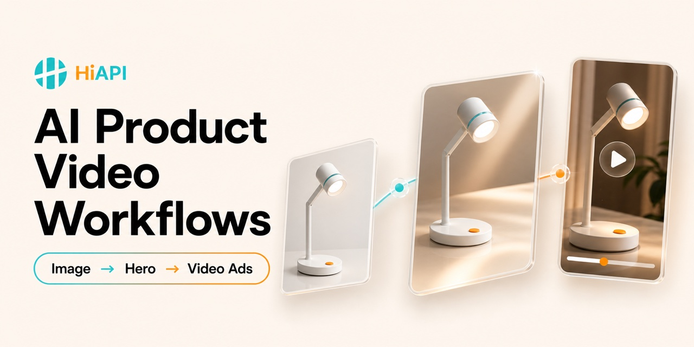

AI 商品视频前的商品图审计
在生成 AI 商品视频之前，检查源商品图的主体、结构、版权、清晰度、背景、反光、包装和卖点证据。
打开工作流 →商品图 · 主视觉 · 广告视频 · UGC · 社媒变体
从商品图到电商广告视频的开放工作流案例库，覆盖商品主视觉、图生视频、UGC 口播、TikTok、Reels、平台变体与质量检查。

六步生产路径
在生成 AI 商品视频之前，检查源商品图的主体、结构、版权、清晰度、背景、反光、包装和卖点证据。
打开工作流 →把通过审计的商品图转成保持商品一致性的电商主视觉或产品广告关键帧，再进入动画阶段。
打开工作流 →把批准的商品主视觉动画化为可控的短产品广告镜头，明确动作、镜头、节奏、音频和连续性。
打开工作流 →把当前电商商品页转成有来源依据的 Hook、分镜、脚本、关键帧、视频片段、字幕和 CTA。
打开工作流 →使用已核实商品、批准脚本、真人授权或合成人物披露、图生视频、原生口播和广告质检，制作真实可信的创作者式商品演示。
打开工作流 →把已批准商品广告片段制作成 TikTok、Reels、Shorts、商城和付费投放变体，同时保持商品事实与可测质检。
打开工作流 →为什么这不是提示词合集
基于当前 GitHub 调研
以下项目于 2026-07-27 通过 GitHub API、README 和许可证文件核验。Star 是时间点快照，不能替代代码质量或许可证审查。
从主题到短视频的完整管线，覆盖脚本、配音、字幕、音乐、横竖版和最终合成。
99,596 stars at audit · MIT · workflow-reference面向商品营销视频的桌面工作流，包含批量剪辑、跨平台输出和示例引导。
5,007 stars at audit · AGPL-3.0 · method-only面向 Agent 的图像、视频和音频配方，包含可复用原子能力、商品参考图和异步生成模式。
3,920 stars at audit · MIT · workflow-reference自托管短视频平台，覆盖商品调研、Hook 与脚本、AI 演员、字幕、渲染、质检和社媒发布模块。
2,770 stars at audit · MIT except cloud/ under a commercial license · workflow-reference电影感商品视频技能，提供产品镜头卡、动效预览、Remotion 模板、素材规范和无头渲染说明。
2,344 stars at audit · Apache-2.0 · workflow-reference通用 AIGC 制作引擎，面向广告与电商的剧本、资产、镜头、声音、异步任务和成片流程。
2,155 stars at audit · Elastic-2.0 · method-only从一张商品图提炼卖点、写脚本、锁定商品原图、生成素材、配音字幕并输出带货视频。
413 stars at audit · AGPL-3.0 · method-only无限画布式商品视频工作流，把可复用商品参考、棚拍合成、环境变体和图生视频节点连接起来。
397 stars at audit · No license file found · method-only给 Agent 和团队使用
npx -y github:HiAPIAI/awesome-ai-product-video-workflows -y仓库同时提供商品 Brief、镜头卡、质检清单、真实 UGC 案例和可追溯开源调研。